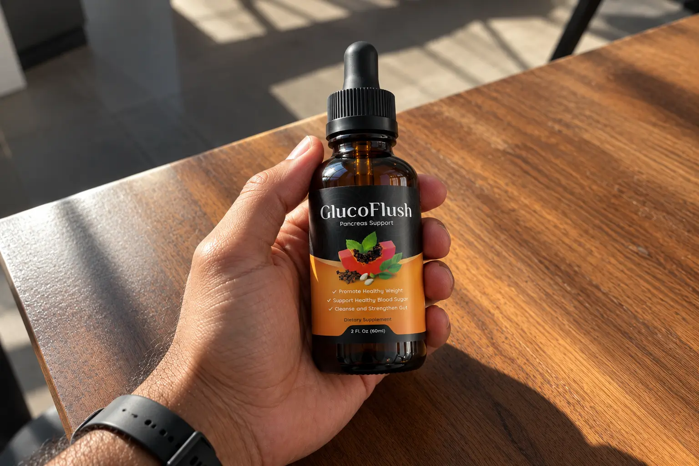
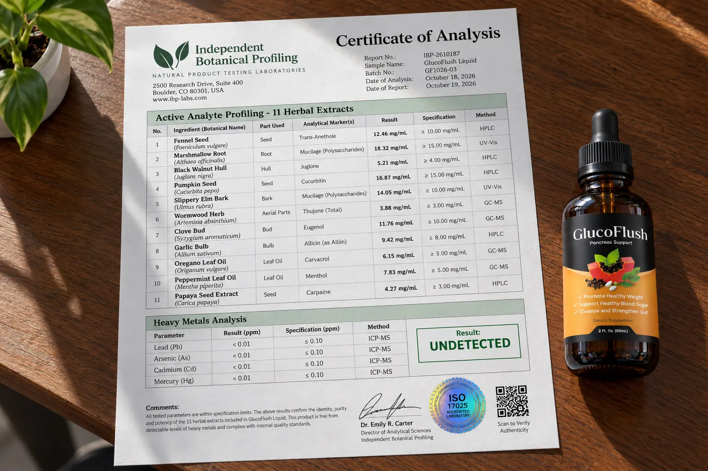

I Audited GlucoFlush: Why It Won't "Cure" Diabetes (But What It Actually Does)

Let’s start with a hard dose of reality that most affiliate review sites will never tell you.
The internet is currently flooded with a viral video claiming that your blood sugar problems and intense cravings are caused by invisible "parasites" living in old water pipes. The video presents GlucoFlush, a liquid herbal supplement, as the ultimate parasite-cleansing solution to fix your metabolism.
As a consumer investigation platform, we despise fear-mongering marketing. The US FDA explicitly warns that unapproved products marketed as diabetes treatments are dangerous. We decided to bypass the "parasite" story, audit the physical liquid formula, and find out what these 11 herbs actually do to your body.
Furthermore, we uncovered a massive domain clone issue involving lookalike sites (like "GlycoFlush") that are trying to scam buyers. Here is our unfiltered, independent investigation.
📌 TL;DR: The Forensic Verdict
Is GlucoFlush a scam? It depends entirely on your expectations. If you believe this liquid will cure your Type 2 Diabetes or allow you to stop taking insulin, then yes, the marketing will severely mislead you. However, as a digestive and craving-support supplement, it is a highly effective formulation. The 11 herbs inside (including Fennel, Wormwood, and Peppermint Oil) have well-documented antimicrobial and gut-soothing properties. By improving your gut microbiome, it helps suppress the intense sugar cravings that derail diets. ⚠️ CLONE WARNING: Do not buy from lookalike domains selling this for $92. You must order via the official ClickBank funnel to secure the authentic formula and the 60-day money-back guarantee.
1. ⚠️ Alert: The FDA Warning & The "Parasite" Myth
Before examining the formula, we have to address the elephant in the room.
The Diabetes Reality Check
The National Institute of Diabetes and Digestive and Kidney Diseases (NIDDK) states clearly: there is no evidence that a "water pipe parasite" is the root cause of Type 2 Diabetes. Type 2 Diabetes is a complex metabolic condition involving insulin resistance.
No dietary supplement—no matter how many herbs it contains—is FDA-approved to treat, cure, or prevent diabetes. If an affiliate blog tells you to replace your prescribed Metformin or insulin with GlucoFlush, they are giving you illegal and dangerous medical advice. You must consult your endocrinologist before starting any new supplement.
2. The Real Science: Gut Health & Sugar Cravings
If the parasite story is a marketing gimmick, what is the actual point of taking GlucoFlush?
The answer lies in the Gut Microbiome. Research shows that an imbalance of bad bacteria and candida (yeast) in your digestive tract can send signals to your brain, demanding sugar. This is why your sugar cravings feel uncontrollable, especially late at night.
The Liquid Advantage: The herbs in GlucoFlush (like Wormwood and Clove) possess strong, clinically verified antimicrobial and antioxidant properties. When taken in a liquid format—which absorbs directly through the mucous membranes in your mouth and stomach far faster than a capsule—these herbs help "cleanse" the bad bacteria in your gut. Once the gut flora is balanced, those aggressive sugar cravings naturally subside, making it significantly easier to stick to a healthy diet and manage your weight.
3. Our Independent Label Audit (The 11 Herbs)
We acquired the physical dropper bottle to verify the active botanical extracts. Unlike supplements packed with cheap fillers and synthetic binders, GlucoFlush is a pure liquid suspension.

🔬 Verified Formula Audit (Liquid Drops)
Here are the primary botanicals verified in the GlucoFlush liquid matrix:
| Botanical Extract | Scientific Function | Status |
|---|---|---|
| Fennel Seed | Known for reducing bloating, digestive spasms, and supporting overall gut transit. | Verified |
| Wormwood Herb | A potent traditional antimicrobial used to clear out unwanted intestinal flora. | Verified |
| Clove Bud | Highly rich in antioxidants (Eugenol); supports healthy blood sugar metabolism. | Verified |
| Peppermint Leaf Oil | Soothes the digestive tract, freshens breath, and acts as a mild antimicrobial. | Verified |
| Garlic Bulb & Oregano Oil | Broad-spectrum natural defenses against bad gut bacteria and systemic inflammation. | Verified |
| Marshmallow Root & Slippery Elm | Mucilaginous herbs that coat and protect the stomach lining from irritation. | Verified |
Note: Because this is a proprietary liquid blend, exact milligram dosages per herb are not disclosed. However, the concentration is strong enough that it must be diluted in a glass of water, tea, or juice before consumption.
4. The "GlycoFlush" Clone Trap & Refund Policy
Because GlucoFlush has gone viral, scammers have set up fake websites with similar names like "GlycoFlush" or "GlucoFlush--com". Some of these sites charge upwards of $92 for counterfeit bottles.
Do not fall for these traps. The official manufacturer offer is processed strictly through ClickBank's secure encrypted funnel.
- 1 Bottle (30 Days): $69.00 + Standard Shipping
- 3 Bottles (90 Days): $177.00 ($59.00 per bottle) + Free US Shipping + 2 Digital Bonuses
- 6 Bottles (180 Days): $294.00 ($49.00 per bottle) + Free US Shipping + 2 Digital Bonuses
The 60-Day Protection: When you use the verified official link, your order is protected by ClickBank's strict 60-day money-back guarantee. If you use the drops and do not notice a reduction in your sugar cravings or better digestion, you can email support within 60 days to request a refund of the purchase price (less shipping).
Bypass Fake Clone Domains & Use The Official Secure Checkout Below:
Go To The Official Secure Checkout >>5. Financial Verdict: Should You Buy It?
If you are looking for a miracle cure that will let you eat a dozen donuts without your blood sugar spiking, keep your money. That product does not exist.
🛡️ Our Purchasing Recommendation
However, if you are struggling with intense, late-night sugar cravings, constant bloating, and suspect that an unbalanced gut microbiome is ruining your diet, GlucoFlush is a solid, natural botanical tool.
The liquid delivery system is highly effective, and the inclusion of Wormwood, Clove, and Peppermint provides a legitimate, science-backed way to support digestion and fight off the bad gut bacteria responsible for cravings. It is an excellent companion to a healthy diet, not a replacement for one.
With a 60-day refund policy, you have plenty of time to test the drops yourself. Ensure you use the official ClickBank link below to avoid the counterfeit "GlycoFlush" scams.
Secure Your Supply Risk-Free Here >>